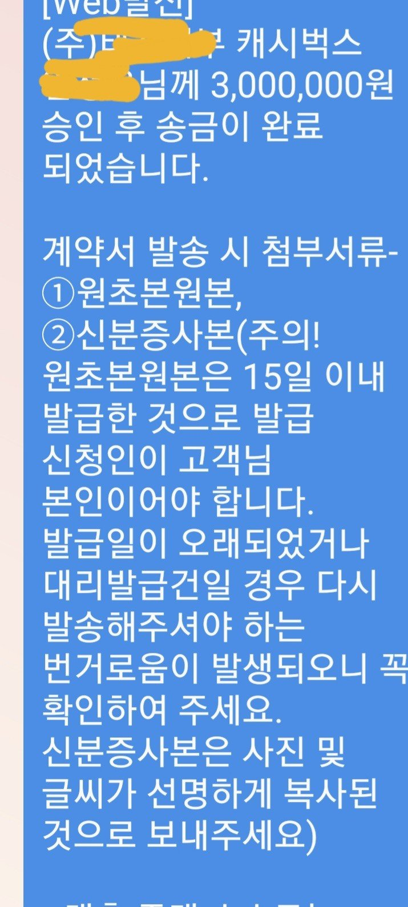

[주부대출] 김인숙 과장님 주부 대출 승인
갑자기 목돈이 필요해서 알아보는 중에 인터넷 검색중 뱅크앤론을 알게 되었습니다
처음엔 믿음이 가지 않아 둘러만 봤는데
대출 후기를보며 믿음이 가서 김인숙과장님과상담 신청을 하였습니다 기대출은 없고 직장에 들어간지 한달이 채 못되어서 직장인대출은 안된다고 하셔서 주부 대출로 300만원 승인받아 급한 불을 끄게 되었습니다 감사합니다

https://cafe.naver.com/cityman88/287990